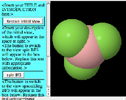

Resizable
Jmol Instructions
Description
This tab is
designed to produce a web page template (no explanatory text) that
displays a single resizable Jmol applet alongside a scrolling pane containing text and
buttons. The buttons can change what is displayed in
the Jmol applet. What they do can be defined by setting up Jmol
with the view you want the user to see. An example picture of
such a page is shown below:

Instructions
1) Set the relative path to the Jmol applet on you web site from where
you will put the folder (directory) containing the files created by
this program. Each "../" means step up one directory level.
Do not forget to account for the fact that the page produced by this
program is inside a folder (directory) that you will be adding to your
web site. Example: Jmol applet is in directory
/www/applets/java/jmol and your web site is in the directory
/www/yourname. You will be adding one more level for this page
(e.g. /www/yourname/thispage). The correct path to the Jmol
applet is ../../applets/java/jmol.
2) Set the percentage of the window width that you want Jmol to occupy.
3) Open the first file you want to appear in your page using the
File..Open.. menu in the Jmol viewer.
4) Zoom, rotate, select, change colors, add orbitals, set the molecule
spinning or what ever you want to do.
5) Click on the "Add Present Jmol State as Instance" button.
6) Repeat for as many different displays as you wish. A button will be
added to the web page that will create each display when the user
clicks on them. You do not need to load a new file each time if
you are just modifying the way the previous one is displayed.
7) When you are done, click on "Save HTML as..." Provide either the name of a new directory for this page or
the name of the HTML file (.htm or .html) you want to create or replace. All necessary files will be created
in the same directory. These include the HTML page itself, the JavaScript file JmolPopin.js, and three files for each model: a data file, a Jmol script, and a PNG image.
If a new directory is indicated, the HTML file will be created in that directory
and have the same name, with ".html" appended.
8) Open the HTML file in your favorite web editor and add you
explanatory text and anything else you wish. As long as you do
not alter the inside of the tables where Jmol will be displayed, you
should be able to change the page without disrupting the JavaScript
that controls the behavior of Jmol.